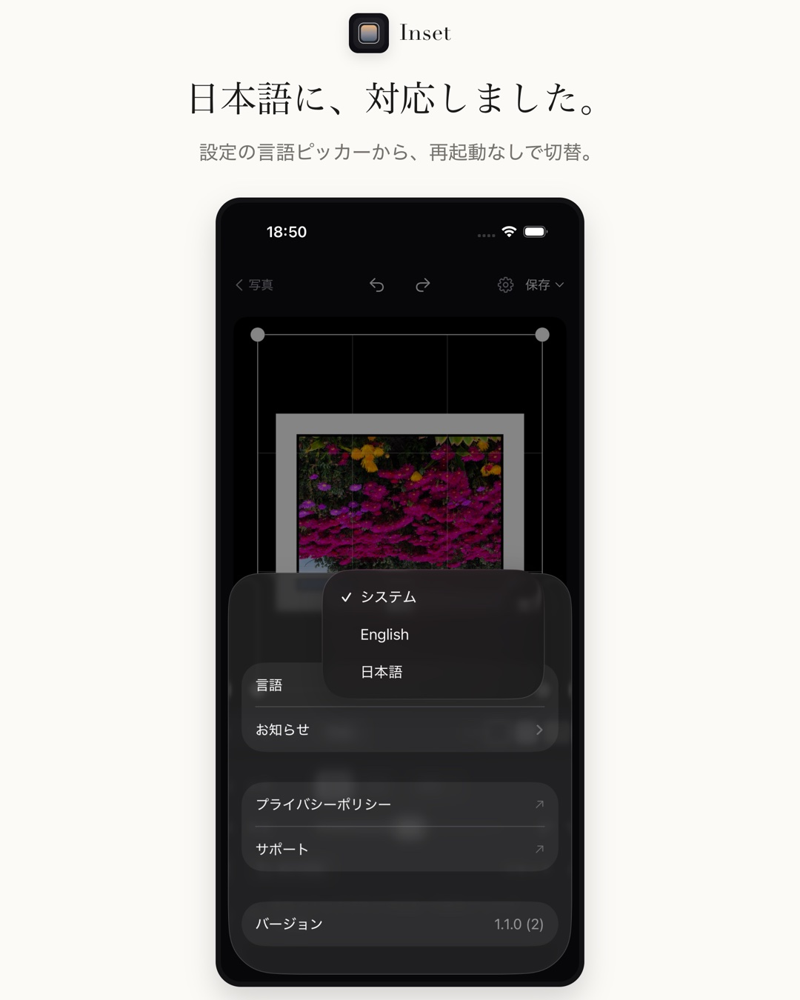
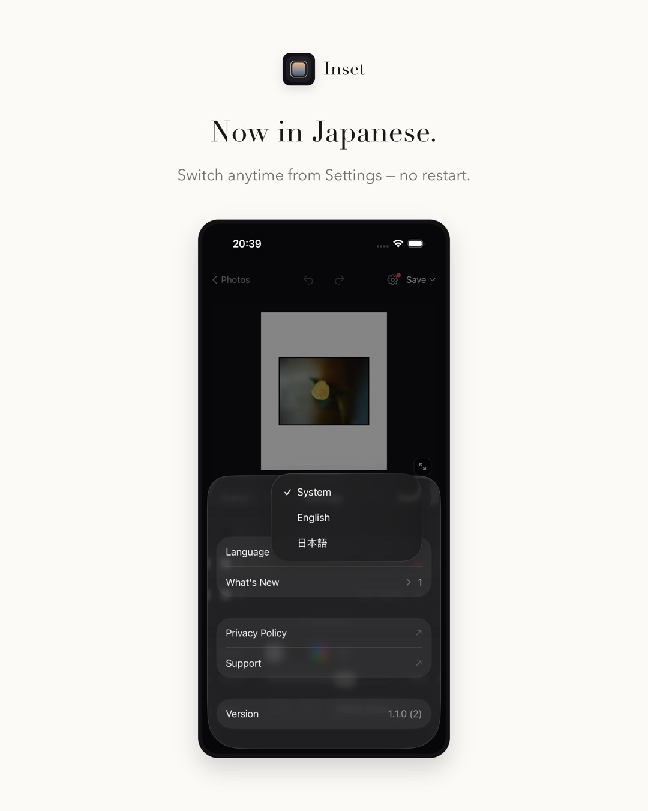
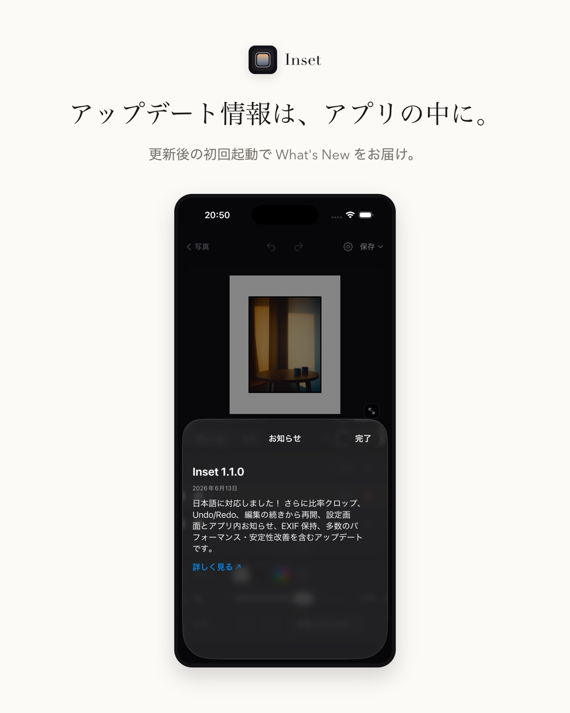
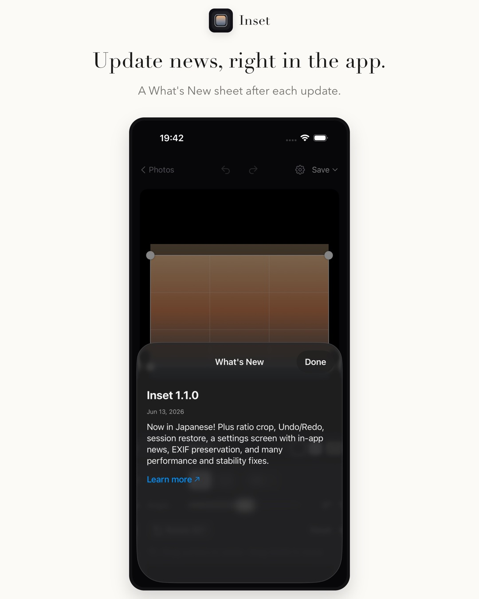
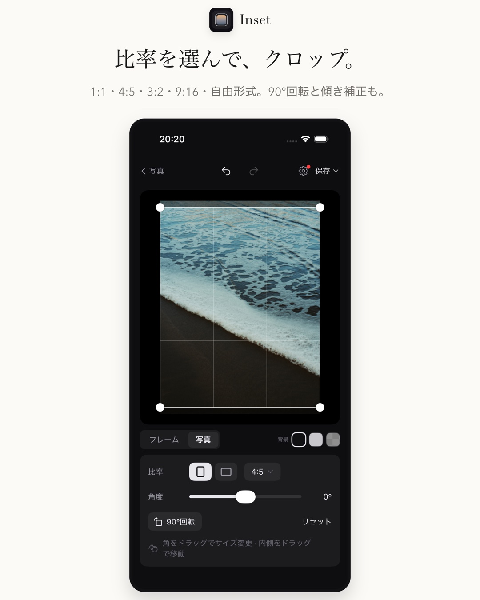
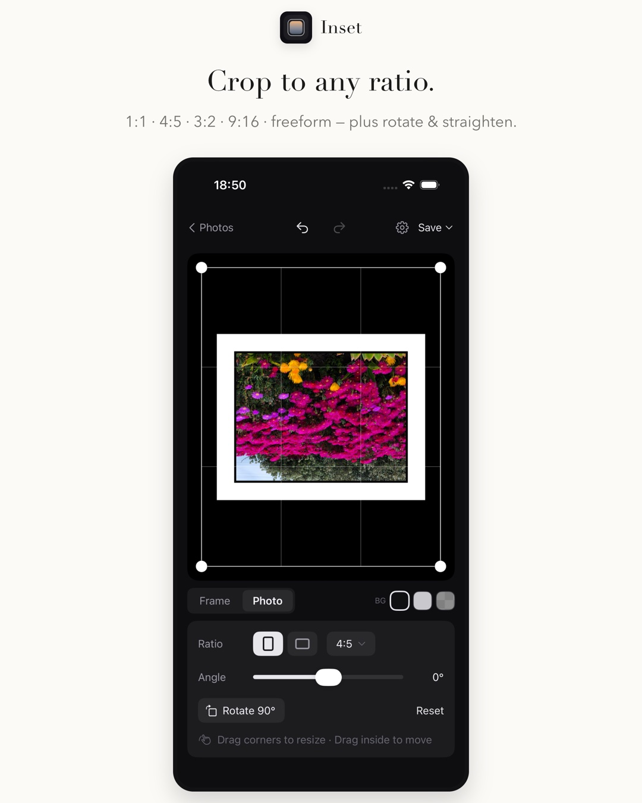
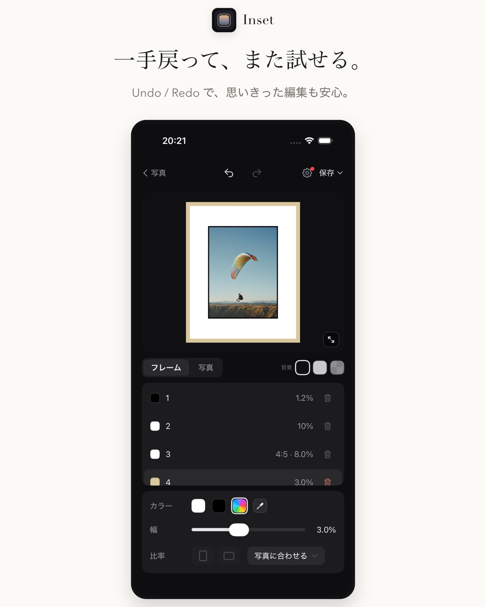
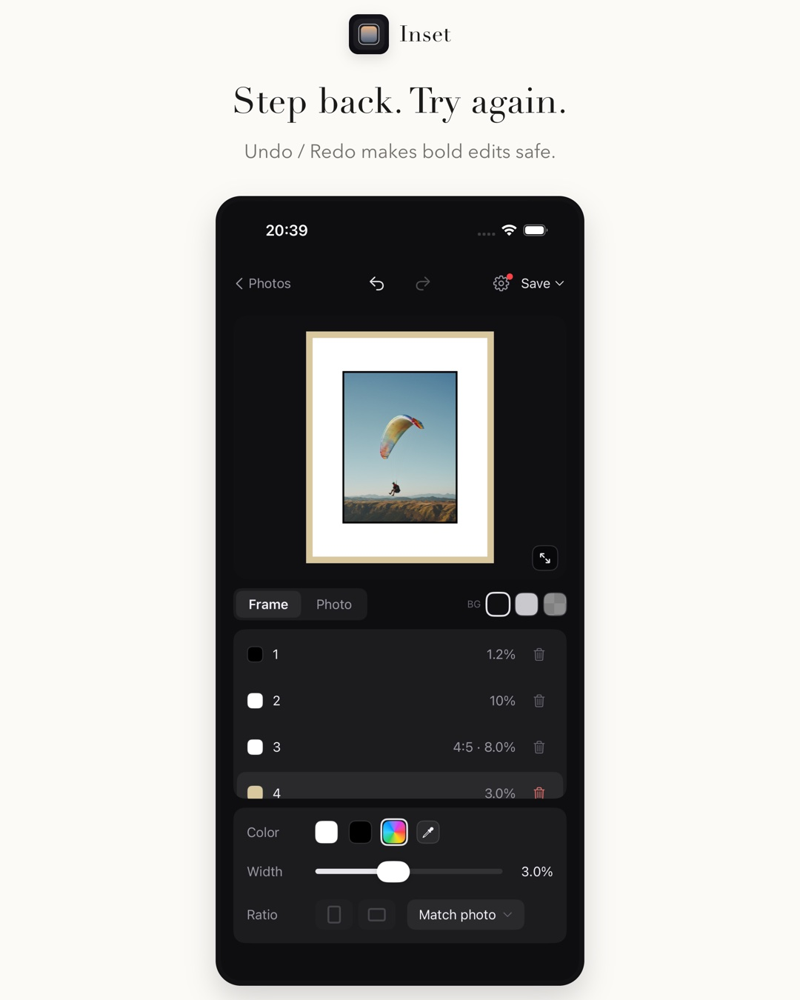

Inset 1.1.0 は、初回リリース後にいただいたフィードバックをまとめて反映した大型アップデートです。日本語対応・クロップ・Undo/Redo・編集の続きから再開など、毎日の編集が確実に快適になる 16 の改善を詰め込みました。 Inset 1.1.0 is a major update built on your feedback since launch. Japanese localization, cropping, Undo/Redo, session restore — 16 improvements that make everyday editing noticeably better.
日本語に対応しましたNow in Japanese
アプリ全体が日本語で使えるようになりました。設定画面の言語ピッカーから、再起動なしでいつでも日本語 / English を切り替えられます（システム設定に従うこともできます）。 The entire app is now available in Japanese. Switch between English and Japanese anytime from the in-app language picker — no restart needed (or simply follow your system setting).


設定画面とアプリ内お知らせSettings screen & in-app announcements
新しい設定画面に、言語切替・お知らせ・サポートやプライバシーポリシーへのリンク・バージョン情報をまとめました。アップデート情報はアプリ内の「お知らせ」に届き、更新後の初回起動では What's New が表示されます（いま読んでいるこのページも、そこから来られたかもしれません）。 The new settings screen brings together language, announcements, support and privacy links, and version info. Update news now arrives in-app, with a What's New sheet after each update — you may have arrived at this very page from it.


編集がもっと自由にMore freedom while editing
- 比率を選べるクロップRatio crop — 写真タブで 1:1 / 4:5 / 4:3 / 3:2 / 9:16 / 自由形式のクロップ、90° 回転、傾きの微調整ができます。Crop to 1:1, 4:5, 4:3, 3:2, 9:16 or freeform in the Photo tab, rotate 90°, and fine-tune straightening.
- Undo / Redo — 編集操作をいつでも一手ずつ戻せます。思い切った調整も安心です。Step back through any edit. Experiment without worry.
- 編集の続きから再開Pick up where you left off — アプリを閉じても、前回の写真とフレーム設定が復元されます。Close the app and your photo and frame setup are restored next time.
- EXIF 情報を保持EXIF preserved — 書き出した写真に撮影情報（位置情報を含む）が引き継がれるようになりました。Exports now carry over capture metadata, including location.




速く、堅牢にFaster and more reliable
- 編集画面・全画面プレビュー・スポイトのパフォーマンスとメモリ使用を大きく改善Major performance and memory improvements across the editor, fullscreen preview, and eyedropper
- 大きな写真（高解像度・HEIC/DNG）の読み込みと書き出しを安定化More stable loading and exporting of large photos (high-res, HEIC/DNG)
- 写真を選んでも編集画面に反映されないことがある問題を修正Fixed photos sometimes not appearing after picking
- カラーピッカーで写真の色を拾えないことがあるバグを修正Fixed the eyedropper occasionally failing to sample colors
- 写真を切り替えた時に前のクロップ・回転が残る問題を修正Fixed previous crop/rotation persisting across photo switches
- プリセット保存の堅牢化（破損時の自動バックアップ）とクロップ精度の改善Hardened preset storage (automatic backup on corruption) and improved crop precision
次のアップデートWhat's next
次の v1.2 では Inset Lab（複数写真への一括フレームなど）を計画しています。最新情報はアプリ内のお知らせとリリースノートで案内します。 v1.2 will introduce Inset Lab, including batch framing for multiple photos. Updates are shared through in-app announcements and release notes.
フィードバックは サポートページ からお気軽にどうぞ。 Feedback is always welcome via the support page.